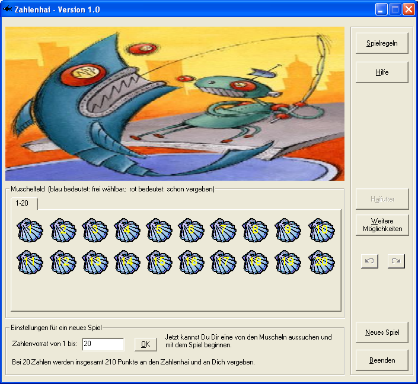

Der "Zahlenhai" ist ein Lernspiel, das das Verständnis des Teilens von ganzen Zahlen spielerisch verbessern soll. Es ist einfach zu gewinnen für kleinere Zahlenmengen. Und es ist eine echte Herausforderung für größere Zahlenvorräte.
Die Spielidee des Zahlenhais besteht darin, dass der Spieler von den auswählbaren Zahlen möglichst viele für sich gewinnt, so dass deren Summe größer ist als die Summe der Zahlen des Zahlenhais und möglichst maximal. Wählt der Spieler eine Zahl, bekommt der Zahlenhai alle noch freien, echten Teiler davon. Die echten Teiler von 6 sind zum Beispiel "1", "2", "3".
Das Spiel lehrt spielerisch den Umgang mit Teilern und Primzahlen und wurde ursprünglich für Schüler konzipiert.

Weitere Informationen finden Sie in der Online-Hilfe, die im Spiel selbst integriert ist.